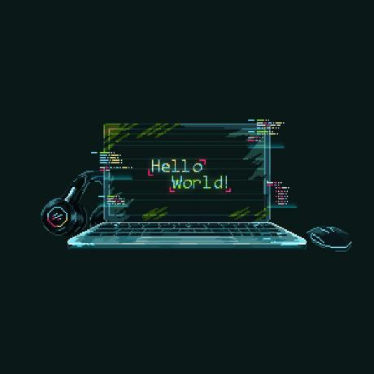

زبانهای برنامهنویسی
- Rust
- Python
- C / C++
- SQL
Rust برای بکاند؛ C/C++ را بیشتر از همه دوست دارم.
دانشجوی علوم کامپیوتر — دانشگاه تبریز
بکاند دولوپر در آرکا Rust
دانشجوی ترم پنجم دانشگاه تبریز و بکاند دولوپر در آرکا. با Rust سرویس مینویسم و بیشتر از همه از کار با C/C++ و مسائل سیستمی لذت میبرم.

$ whoami
mahdi — rust backend developer
$ cat stack.txt
rust · c/c++ · python · sqlite
$ ./status
● backend dev @ arkaمن مهدیام؛ از آن آدمهایی که وقتی چیزی درست کار نمیکند، تا پیدا کردن دلیلش ول نمیکنند. مسیرم با پایتون شروع شد و امروز در آرکا با Rust سرویسهای بکاند مینویسم.
در دانشگاه تبریز علوم کامپیوتر میخوانم و کنار درس، روی پروژههای واقعی کار میکنم؛ از یک اسکرپر برای LinkedIn تا پیادهسازی لایهٔ داده در یک اپلیکیشن Rust. عضویت در تیم ICPC دانشگاه هم یاد داد که قبل از کد زدن، مسئله را درست بفهمم.
بیشتر از هر چیزی کار با C/C++ را دوست دارم؛ برنامهنویسی سیستمی، بهینهسازی و ساختن ابزارهای کوچک و سریع.
struct Developer {
name: &'static str,
company: &'static str,
university: &'static str,
semester: u8,
stack: [&'static str; 4],
}
let me = Developer {
name: "Mahdi Arjmandi",
company: "Arka",
university: "University of Tabriz",
semester: 5,
stack: ["Rust", "C/C++", "Python", "SQLite"],
};چیزهایی که در پروژههای واقعی استفاده کردهام؛ نه فقط اسمشان در رزومه.
Rust برای بکاند؛ C/C++ را بیشتر از همه دوست دارم.
بیشتر با SQLite؛ از طراحی جدول تا بهینهسازی کوئری.
کار روزمره روی لینوکس و ارتباط بین پردازهها با UDS.
پیادهسازی از صفر، نه فقط استفاده از کتابخانه.
پروژههای دانشگاهی و شخصی؛ هر کدام یک مسئلهٔ واقعی و یک درس تازه.
استخراج خودکار پیشنهادهای شغلی از LinkedIn بر اساس موقعیت مکانی و حوزهٔ کاری؛ دادهها در SQLite ذخیره و در رابط Streamlit نمایش داده میشوند.
سورس کدمشارکت در بکاند اپلیکیشن PixRoot با Rust؛ پیادهسازی لایهٔ دسترسی به داده (CRUD) و ارتباط بکاند و فرانتاند با Unix Domain Socket.
مشاهدهٔ پروژهتبدیل پایگاهدادهٔ Noteb از SQL به SQLite، ساخت ابزارهای استفادهٔ آسانتر و بازبینی و بهینهسازی دادهها برای پرسوجو و تحلیل.
سورس کدپیادهسازی از صفر هشتیبل با آدرسدهی باز، هیپ، لیست پیوندی حلقوی، درخت دودویی کامل و جستوجوی دودویی؛ برای درک عمیق مفاهیم.
سورس کدبکاند دولوپر — Rust
توسعهٔ سرویسها و APIهای بکاند با Rust در تیم مهندسی آرکا.
arka.ir ↗کارشناسی علوم کامپیوتر — ترم پنجم
تمرکز روی الگوریتم، ساختمان داده، پایگاه داده و برنامهنویسی سیستمی.
Semester 5عضو تیم دوم مسابقات
حل مسئلههای الگوریتمی در قالب تیمی و زیر فشار زمان.
Team #2اگر پروژهای داری، یا دوست داری دربارهٔ Rust، C/C++ و کارهای سیستمی گپ بزنیم، خوشحال میشوم بشنوم. سریعترین راه، ایمیل است.